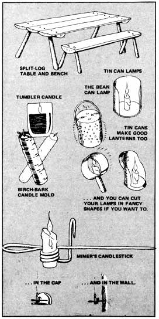
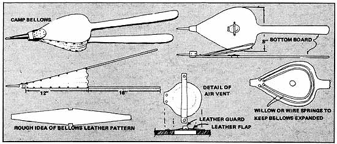
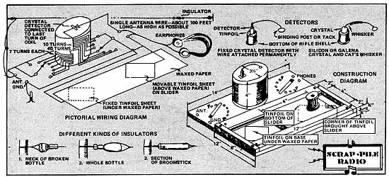
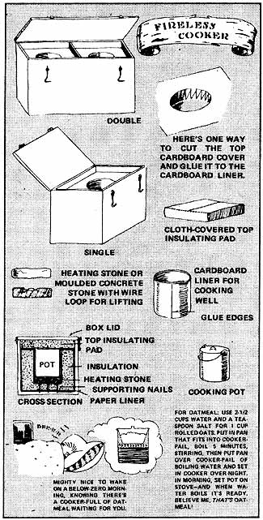

ALTHOUGH CACHE LAKE COUNTRY WAS COPYRIGHTED IN 1947, I DIDN'T DISCOVER THIS GREAT LITTLE BOOK FOR TEENAGERS (AND YOUNGER FOLKS AND ADULTS TOO!) UNTIL I FOUND A COPY IN A SECONDHAND BOOKSTORE SOMETIME IN THE EARLY 60'S. EVERYBODY SHOULD HAVE ONE. THE WAY THAT JOHN J. ROWLANDS HANDLES COPY AND HENRY B. KANE SUPPORTS THOSE WORDS WITH ILLUSTRATIONS IS A DELIGHT. AND CACHE LAKE COUNTRY IS PACKED WITH RICH, WARM, USEFUL "DOWN-HOME" LORE TOO!-JS.
Reprinted from Cache Lake Country by John J. Rowlands. Illustrated by Henry B. Kane, with permission of the publisher. Copyright 1947, 1959 by W.W. Norton & Company, Inc., New York, N.Y.
During the usual April rainy spell I put in some time getting things fixed up for the summer. I made myself a new table from three boards, two pieces of split birch log, and some seasoned birch saplings for legs. I plan to make some benches the same way to go with it. That will mean company won't have to sit on the nail keg. The only tricky part is to bore the holes in the logs at the proper angle so that the legs will set just right. The best way is to lay the pieces on the floor, make a wooden templet or guide of the angle, and use it to start each hole.
While I was working on the bench Hank came over and got an idea that he would try his hand at making some candle holders out of tin cans. You've probably seen some of them before. They come in handy and a candle is a pretty safe light to have in a house, especially if you have to carry it around at night, which is not safe to do with a kerosene lamp. What is more, a candle is almost certain to go out if it drops on the floor. I save the ends of all burned candies, melt them up and pour them into a jelly glass, first setting a wick of string in the glass by tying the top to a twig that rests on the rim of the glass. This kind of candle lasts a long time.
Hank sometimes makes his own candies by molding them in the bark slipped off a small decayed birch sapling. You often see birch rotting on the ground in dark places in the woods and if it has been there long enough the soft wood can be pushed out, leaving a nice mold for a candle. You make a little wooden plug with a hole in the center to hold the wick in place. Stick the plug in the bottom of the birch tube, tighten up on the string, and tie it to a twig across the top. Then all you have to do is pour in your melted wax and when it's hard run a sharp knife down the side and strip off the bark. A piece of bark about hoe-handle thick and four inches long is easy to clean out and makes a. candle of the right size.
When I first came up to this country I worked for a while in a mine and I still have my miner's candlestick and a very handy thing it is. One end is sharpened so that I can stick it into a wall, and there is also a little hook to hang it on my hatband leaving my hands free to work. They are not used much since the gas lamps came in, but I find it useful and it keeps the memories of my mining days green.
For a long time I had been wanting a bellows to quicken up my fire once in a while. It is a very handy thing to have around for various purposes. So during a stormy spell I got to work and made one. Mine has extra long handles so that I don't have to stoop when I use it.
The main part of the bellows forming the air chamber is eight inches wide by twelve inches long and the handles are two feet long. I had saved a nice piece of pine board which I planed down to half an inch thick so the bellows would be light to handle. For the nozzle I used an old .38-55 rifle cartridge with the head filed off. It is just about the right size, the wide end being fitted into the block at the point of the bellows.
In the lower board I bored an inch and a quarter hole for the intake valve. The valve flap is made of a small block of wood faced with a piece of soft leather about a quarter of an inch larger than the hole with room enough left on one side to tack it to the inside of the board. Across the block is tacked loosely another little strip of leather, so that the flap can rise about a quarter of an inch. The idea is that when the boards are pulled apart, air is sucked in, but when they are pushed together the air forces the leather flap tight against the intake hole.
On the bottom board is nailed a little block about two inches long with a hole bored through it to hold the nozzle. Now, before you hinge the top board to the block with a strong piece of leather, you have to put springs between the boards to keep them separated. I used two slender pieces of willow, curving them around and tacking the ends down to the lower board near the point of the bellows. With that done you are ready to hinge the top board and fit the leather sides. For this you will need some soft pliable leather. I used soft smoked deerskin, but the sheepskin chamois that you can buy would work very well. To get the shape of your leather the best thing to do is to prop the two boards apart where you figure they would be as wide open as you would want them, ant! then fit a paper pattern around them and trim it until it is just right, leaving plenty of room at the pointed end for tacking around the block.
By using a pattern you don't run the danger of spoiling your leather, for the job of fitting is a little tricky. I found that the best way is to tack the leather on with the tacks part way in until you are sure it fits, especially around the handles where you-have to notch it. When it is all laid on you can drive the tacks home and then cover the edges with a binding strip of rawhide which not only protects the leather but helps keep it airtight. There should also be a binding strip where the leather fits around the point of the bellows.
Aside from brightening up my fire in no time at all, I use the bellows when I ready up my house to blow dust and crumbs out of the floor cracks where it's hard to get at them with the kind of homemade broom I make.
* * * * * * * * *
The Chief, Hank, and I have been having a wonderful time building a crystal detector radio receiver. It all began when a friend of ours, Mr. Beedee, a radio engineer, came up for a week's rest last fall and got an idea it would be a real achievement to build a radio from the odds and ends of material you could find lying around a camp in the north woods. Of course, we couldn't expect to find materials to make earphones, but he thought if we worked hard enough we could dig up the rest. Before he left he made a diagram for a set and said he would send the earphones. So we started a search for parts.
It was like one of those scavenger hunts you hear about. When the three of us put all our findings together we had some pieces of well seasoned pine board, various bits of metal, two or three dozen brassheaded tacks, an empty spool, a handful of assorted screws, and an old cardboard salt box.
The two main problems were the tuning coil and a variable condenser. Following Mr. Beedee's diagram we found we would need about 150 feet of insulated copper wire. Any size between number 22 to 28, or even finer, would do. For a while it looked as if we were not going to have any radio, but Hank got an idea and we snowshoed over to the old abandoned mine to see what we could find there. As luck would have it, in one corner of the blacksmith shop where it had lain for nigh on to twenty years was an old ignition coil once used for firing a gas engine. I certainly was excited when I pulled that thing apart and saw what was inside. Sure enough, there was a winding of fine wire, just the kind we wanted.
The salt box turned out to be just the thing for winding our coil on, so we cut off one end four inches long and soaked it in melted candle wax so it wouldn't take up moisture. Then we began winding, beginning one-quarter of an inch from one end of the box and put on a total of 166 turns. At the start of the, winding we anchored the wire by passing it back and forth through three pinholes punctured in the cardboard tube so the wire wouldn't slip. Every seven turns we twisted a little loop to make a tap until we had eight of them. Then we wound on 40 turns without any taps. From then on to the end we made, a tap every ten turns, scraping off the insulation on each tap to make a good connection. Those taps, connected by short wires to the switch points, make it easy to use any desired number of turns on the coil to tune in a station.
When all the turns were wound, the end of the wire was again fastened by passing it back and forth through pinholes in the tube. Then we painted the coil with candle wax to keep the wire in place. While we were doing that the Chief made a little wooden disk to go on top of the coil to hold the crystal detector.
Making the movable condenser had us puzzled for a while, but we looked on the diagram and it said tinfoil would do, so we started to hunt and it wasn't long before the Chief thought of the tinfoil lining of the packages our tea comes in. We got enough to make two sheets four by six inches and the Chief smoothed it out very evenly with the edge of a knife. We also needed some waxed paper and found what we wanted on a package of dry cereal. Meantime Hank cut out a pine baseboard for our set 14 inches long and 12 inches wide.
The first thing we did then was to start on the condenser and you will get an idea from our friend's diagram how we made it. Out of an old piece of tongued and grooved siding I cut two narrow guides and from another piece of the board we made a slider five and one-quarter inches wide and six inches long. Fitted between the two guides, this piece slides back and forth very nicely after being shellacked and waxed, making it easy to adjust the condenser.
The next step was to use shellac to fasten one of the sheets of tinfoil onto the baseboard at a 45-degree angle, leaving one corner free to connect a wire, and then covering it with waxed paper extending the full width and length of the guides which are twelve inches long. Then we screwed the guides in place on top of the waxed paper, making sure that the slider board moved back and forth freely with just enough clearance so it didn't touch the baseboard.
On the bottom of the slider at a 45-degree angle we fastened the other sheet of tinfoil, which was also glued down with shellac, leaving one end turned up over the edge of the slide for connecting a wire. The slider ought to be shellacked, too, for you want to keep all wood parts as dry as possible. Then the Chief screwed the spool on top for a handle, fitted wood strips at each end as stops for the slide, and our condenser was done.
I used two narrow strips of brass cut from the name plate of an old canoe for the two switch blades and then copper wires from the various taps on the coil were brought down and fastened under brass-headed tacks. The connections for the earphones, antenna, and ground were made of little bits of copper wire, but we hope to have something better, such as a binding post, or spring clips, someday.
For a cup to hold our detector crystal we used one of the Chief's .3855 caliber rifle shells cutting it off about one-half inch from the cap end so that we could screw it to the top of the coil. Matter of fact you could use the end of a 28-gauge shotgun shelf or even one of those little cups they use on brass curtain rods.
For a cat whisker you take about two inches of fine steel wire sharpened to a point at one end where it touches the crystal, which should be a little lump of galena or silicon or even iron pyrite. I have heard that you can use a couple of razor blades set in slots in a block of wood, with a fine wire resting on the edges for a detector. Some fellows say a small piece of coal will do, but I don't put much reliance on such detectors.
The best detector of all is one of the small fixed crystals that you can buy in any radio store. When our earphones arrived, tucked in with them was a fine fixed crystal and I can tell you we didn't lose much time putting it in place. It has a small tip o n one end, so we set the large end in the holder and made it snug by tamping in tinfoil and then wound the fine bare wire around the tip to make the other connection, for the cat whisker is inside these manufactured detectors.
For a spell it looked as if we would have no antenna, but then I thought of the copper wire I used for deep trolling for lake trout and we stretched a hundred feet of it between two jack pines above the cabin, taking care to insulate the ends. From one end we brought an insulated lead wire through the window to our receiver. We also took some bare wire through the window and buried it in a damp place below the eaves for a ground connection.
For insulators on our aerial we used pieces of broken syrup bottles, but if you have no glass you can take a well-seasoned piece of hardwood, such as the end of a broomstick, about six inches long, drill holes about an inch from each end, and boil it in candle wax to keep out moisture.
I never will forget that evening when at last we had everything ready and I put on the earphones and listened for the new government station that has been built in the woods about twenty-five miles from us to cover the north country. At first I didn't hear anything so I changed the little switch blades and moved the condenser slider and all of a sudden I heard a girl singing Annie Laurie, clear and sweet!
* * * * * * * * * *
One of the little problems of living in the woods in winter is coming home and having to get a fire going and wait for a meal to cook when you are hungry enough to chew rawhide. Well, I've got that one beaten, for I made myself a fireless cooker and now when I am away for a day I come back to a hot meal ready for me the minute I step in the door.
I don't know who invented fireless cookers, but they have been used for a long, long time, especially in the Scandinavian countries, where they were usually insulated with hay or straw and called "hay boxes." A fireless cooker is simple and inexpensive to make, for any kind of box that is tight or even a keg or a barrel will do. The important thing is plenty of good insulation to hold the heat in, and you can find the right kind wherever you are. I used well-dried sphagnum moss, but sawdust would have been all right. In addition to straw or hay, crushed paper, wool, ground cork, excelsior, or cotton batting are all good for insulation. Many of the materials made to keep houses warm, especially mineral wool and fluffy asbestos, would also do well as insulation for a fireless cooker.
The first step in building a cooker is to decide on the pot or pail you plan to use regularly, for on its size depends the kind of box you will need. Make certain the pot has straight sides so it will slip in and out of its compartment easily, and it must have a tight-fitting cover. Enamelware, aluminum, or stainless steel utensils are all fine for the purpose. The best type of pot is one which is about as wide as it is tall, for you don't want any more surface to radiate heat than you can help.
A fireless cooker does a much better job if you use a preheated round, flat stone, the diameter of the pot and about an inch thick, at the bottom of the cooking hole. Sometimes you can find a soft stone that can be chipped to size, but I cast one an inch and a half thick by mixing a little cement with sand and pouring it into a circular cardboard mold. I made a little hollow in the middle and set in a loop of wire so it could be lowered into place with a hook.
Once you have your pot you will know how big a box is needed, for the cooking well that holds the pot must be surrounded by at least four inches of insulating material, top, sides, and bottom. Before doing anything else, line the bottom and sides of the box with heavy paper, and then fill the bottom with four or five inches of insulating material. Next place the pot on top of the heating stone on the insulation in the center of the box and pack insulation evenly and not too tightly around the pot until it comes up to the rim and no more. Then work the pot around carefully until the hole is slightly larger, so it will slide out easily. Now slip in a cylindrical liner of cardboard to form a smooth wall for the cooking compartment.
When the insulating material has been packed to the top of the pot, cover it with heavy building paper or cardboard with the edges turned down and pasted to the sides of the box, the edge around the cooking hole turned down and glued to the cardboard liner. Then you make a cloth cushion four inches deep to fit the top of the box and stuff it with four inches of insulating material, for this top pad is very important. The last step is to make a hinged lid for the box that presses down snugly on the top insulating pad. Make a hook to hold it down, for the tighter the cooker the better it will work. If you want to make two cooking compartments make a partition in the middle and have a separate top insulating cushion for each side.
Once you have a fireless cooker you must know how to use it properly to get the best results. Of course you start your food on a stove and bring it to a boil, meantime heating the stone for the bottom. Then get it into the fireless cooker as quickly as you can-instantly is none too fast. That's the real secret!
Another important thing to remember is that you will get much better results if the food fills your cooking pot instead of being half or threequarters full, for wherever there is an air space, heat will be lost. Beans, cereals, stews, and soups are best cooked from eight to twelve hours, but many foods need only two or three hours in the cooker. You don't know how good food can be until you have tasted it from a fireless cooker, which keeps in all the fine flavors that usually steam away on a stove.
|
|
 |
 |
|
 |
 |
|